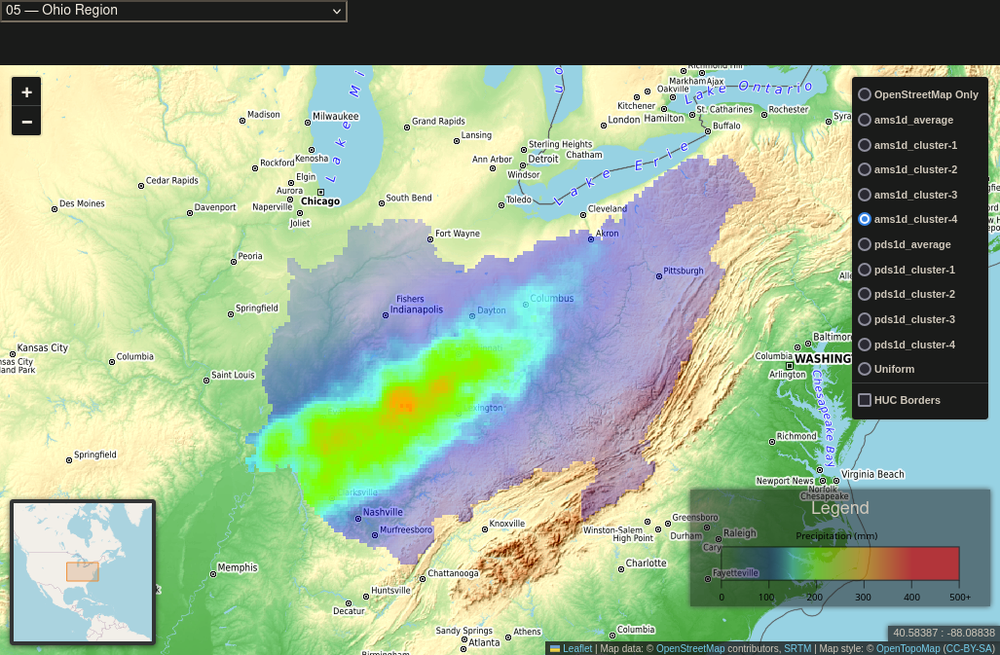
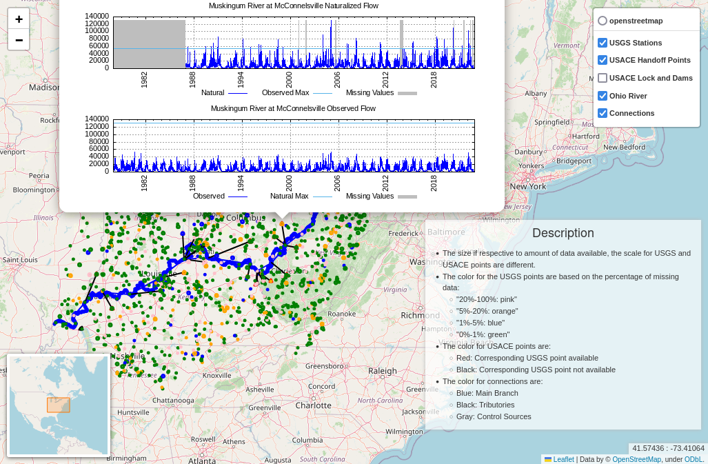

About Me
Welcome to my page
Hi there.
I'm a Linux Enthusiast, so I write a lot of scripts or codes for personal linux tools, and I write some for emacs.
My research area is Hydrology/Hydraulics. I'd be happy to collaborate on things related to those.
My hobbies include anime and light novels, so I sometimes contribute to fan translations by making scripts or proof reading. Or very rarely trying to translate using meager japanese that I know (and lots of jisho/deepl).
You can reach me in discord, my username is: thevoidzero#４６８６ (type it out, don't copy it)
Websites
I don't like web dev that much because I find it harder than making software tools. But since web apps are lot easier to use and easier to update after distribution I do make some. But unfortunately I haven't made anything that has lots of users/visitors.
Interactive Map and data download for Locus Project
Link: https://ronin-river.github.io/

This is a project I did as a ORISE Fellow. Here the extreme precipitation analysis was done for the whole continental United States based on HUC regions, and the spatial patterns were clustered. The netCDF files can be downloaded through the interactive index, while the results can be explored from the interactive map as shown in the screenshot above.
Interactive Map showing the streamflow data available for the Ohio River Basin
Link: https://atreyagaurav.github.io/ohio-river/index.html

This is a simple interactive map I created to show the data density for the Ohio River, as well as to show the gaps in the streamflow data from USGS and USACE in concerns to the main stem.
Kabita Check – Currently Unavailable
Link: https://kabita-check.herokuapp.com
It is a website to check the chanda kabita (Poem) in Nepali Language. I made this for my father to check for any typographical mistakes he may have in his poems. It also has a Nepali Dictionary though with additional features of being able to search through the rhymes and tones.
Onegai Translations – Currently Unavailable
Link: http://onegai-translations.tech/home
It is currently under developement, the plan is to make a platform where translations can be done by the translators while the users can also read the content in both languages line by line. The website is intended to be used by language learners who are interested in literatures.
Due to my lack of skill in web dev, the website is just a skeleton for now. I do have a local copy with backend but I don't yet know the proper way to host it.
And because of lack of skill I've made a commandline tool in Rust for some translation works.
Programs for Work
HEC-DSS file utility
Link: https://github.com/Atreyagaurav/dss2csv
This programs can convert the DSS v7 files into CSV files or vice versa. As well as DSS v7 grid files into ASCII grids or vice versa. This is useful when you want to batch convert files.
Note: This is currently only tested in Linux, for windows version heclib might have to be manually compiled.
Anek utility
Link: https://github.com/Atreyagaurav/anek
This program can help managing a large project that needs to run same pipelines of tasks in different locations, or with different models.
I have used it extensively since I made it to make easily replicable studies, where I write the scripts to download data, analyse them, visualize them etc for one location, and use anek utility to apply that for different locations.
NADI (Network Analysis and Data Integration)
Link: https://github.com/Nadi-System/nadi
This program is under-development, and looking for funding source to support it. The program is an extensible framework that can use river connection information to assist in data analysis and management. It has a plugin architecture that can extend the functions as per the user demand.
Extra utilities in nadi toolset can also download the basin/tributaries GIS files for USGS stations. As well as find the river connections based on streams network and points of interest.
Beamer Quickie
Link: https://github.com/Atreyagaurav/beamer-quickie

This program lets you open LaTeX files with beamer presentation and shows you the frames with curresponding PDF pages so that you can visually copy the slides you want while making a new one. It can also give you the list of image files you might need to copy for those slides.
General Programs
Here are some of the programs I am proud of.
All of these programs are on my github account, so you can fork and modify to your heart's contents. And other details on how to use are also there.
Local MPV
Link: https://github.com/Atreyagaurav/local-mpv

This programs runs a simple webserver with a music player (mpv) on the computer. You can control the music player from other computers or phones in the same wifi network. This is useful for letting your family share the control of playlist for music, or for home parties so people can add songs to the playlist.
URL Memories
Link: https://github.com/Atreyagaurav/url-memories
This simple GUI program can save any links you want to remember, with a support for episodes/chapters that might change the link. Useful to save the links to your favorite shows and books, so that you don't have to remember where you are.
Onegai Translation Tools
Link: https://github.com/Atreyagaurav/onegai
Collection of some tools for translation from japanese to english. The tool can download novels from shosetsu website, preprocess them, translate them and combine them into html for bilingual reading.
Clipboard Capture
Link: https://github.com/Atreyagaurav/clipcap
This tool just monitors your clipboard and captures the contents you're interested in. Useful when you have to copy multiple lines from a website without having to copy paste each one of them in a file.
Birthday reminder
This one program was created to remind myself of the birthdays that I might miss. This works for any annually celebrated dates, be it xmas or marriage anniversary too. But they have to be celebrated on a fixed date.
I know there are like hundreds of programs which can remind you of the dates, but why is this special?
- First it supports Bikram Sambhat (BS) date system. It might not be important for other people but since I'm from Nepal, I needed a program to do that in BS system as well as AD, and that's the reason I made this program.
- Second, it's a simple C program, and output is simple, so you can use this in scripts to make other pipelines. For example, I use the output produced by this program to display the birthdays in my desktop.
- It supports output to remind formatted reminders. Remind is a CLI program that has its own syntax for making reminder entries. It is really sophisticated.
Calendar desktop
Link: https://github.com/Atreyagaurav/calendar-desktop
This is a simple program that just prints out the current month's calendar dates for display from conky.
It is just cute enough for me and does the job without having to open any calendar app so I'm satisfied.
Here is the screenshot showing it in my desktop.
For complicated calendar view with my reminder entries I use remind -c.
Time Counter
Link: https://github.com/Atreyagaurav/TimeCounter
This is a program in C# that I made during my GRE preparation days, I made it so I could have a countdown to my GRE exam, but it can be used to countdown anything. I made it remember the date set when I was using windows, but recently I tried and saw mono can run it in linux but the save doesn't work, so I made it countdown to end of day by default.
Here's a screenshot:
You can read through the readme in the repo to learn more.
Anime shell
Link: https://github.com/Atreyagaurav/anime-helper-shell
This is basically an interactive shell for watching, tracking and everything anime related. Instead of just using a cli tool I found a whole shell was easier to use as you'd also have the autocompletion of anime names and episodes that way. Problem is I'm not good with networks so I can't understand how websites stream their videos. So sometimes it cannot do the direct streams, but other functionality are always there.
Jisho Chibi
Link: https://github.com/Atreyagaurav/jisho-chibi
This is a small Qt application that acts as front end for jisho.org website for me to look at japanese words and their meanings while doing translations or reading japanese text.
Gate Simulator
Another C program. This was me just passing time because I wanted to play around with simulation. But didn't end up as I thought. But as for simulation of electronic gate, I am proud of my file parsing and the calculations for the gates circuit.
Calculate Primes
This is a library I created for python. The core codes are on C, and I can generate a python module with setup.py.
The advantage is, this program can generate prime numbers and then cache them in a file, then you can read the file for the prime numbers, which makes it a lot faster than other simple program. The algorithm used to generate the prime number in itself is fast too.
Scenatio Game
Link: https://github.com/Atreyagaurav/scenario-game
My try on making VN like text adventuring game.
Linux specific scripts
General scripts collection
Link: https://github.com/Atreyagaurav/scripts
I have a repository dedicated to linux scripts that I use. It has few of my favourites like compile script for LaTeX which auto detects changes in the .tex files and compiles them. Combined with auto-refresh on the viewer I can have realtime feedback.
And some general purposes like sound, brightness change, microphone mute etc scripts.
Mtl related scripts
Link: https://github.com/Atreyagaurav/mtl-related-scripts
This repo has scripts that can be used for mtl and preprocessing of japanese text for mtl generation.
Emacs specific codes
LiTeX mode
Link: https://github.com/Atreyagaurav/litex-mode
This repo is a minor mode for text modes in emacs, it can convert valid lisp expressions to latex ones, so that you can use lisp for calculations and turn them into latex for exports.
Units Mode
Link: https://github.com/Atreyagaurav/units-mode
After finding about gnu units with superb capacity to convert between units as well as to do units related calculations, I made an emacs interface to it. Now I can use it from inside emacs and I also added some extra functionality like molecular weight calculations. It was a fun short project.
flite mode
Link: https://github.com/Atreyagaurav/flite-minor-mode
This is a minor mode to use on text modes that implements Text to Speech (TTS) using flite. So I can make emacs read me contents. Though using flite I can read any text on my laptop as long as it's on screen as text. Using emacs means I can have it highlight lines it's reading to keep track of where it is.
other modes
Other modes that I wrote for emacs that I didn't make into individual repository are here: https://github.com/Atreyagaurav/emacs-modules
LaTeX class
University Submission and Homeworks
Link: https://github.com/Atreyagaurav/university-report-class
This repository has two classes unisubmission and unihw that I use for my submissions. Combining this with org settings I have automated the task enough that for simple submission I can just export an emacs org file and submit it.
Term Projects
Fall 2022
Aquifer Properties Parameter estimation using Genetic algorithm
Link: https://github.com/Atreyagaurav/aquifer-properties-ga
This is a term project for optimization problem where I did a parameter estimation for groundwater data. I used Genetic Algorithm to do the job since I've been meaning to try it. It was fun.
The readme in the repo has the animation with the final results and how the solution converse.
Spring 2022
Ground Water Models in flopy
Link: https://github.com/Atreyagaurav/GroundWaterModeling
This repo has the groundwater modeling I did for my groundwater modeling class during spring 2022, it has org files with description and python codes using the flopy library to make MODFLOW models and execute them. The releases tag has the jupyter notebooks for people who use it. Everything else like py, latex and pdf in the repo can be generated from the org file itself. As well as the org files can be directly browsed in the github without having to download them.